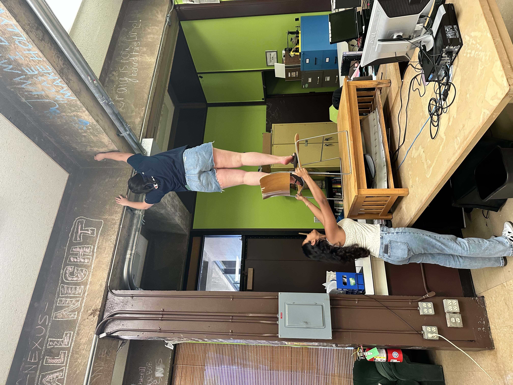
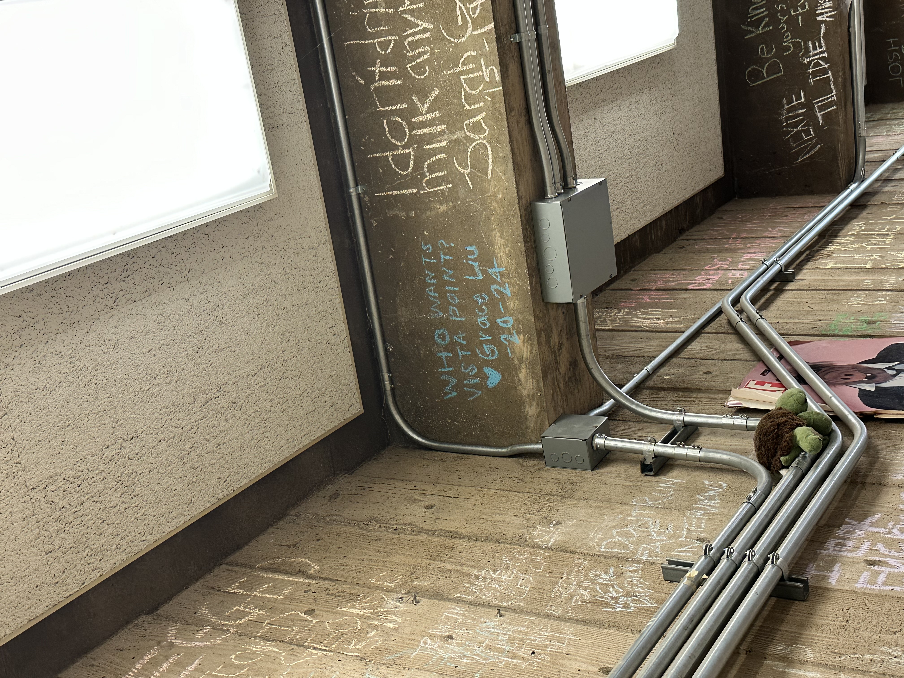

← Back to Writing
Copy @ the Daily Nexus
I spent four years on the copy desk at the Daily Nexus, UCSB's independent, entirely student-run paper.
Copy editing is the least visible job in a newsroom and the one that taught me the most about writing. You read other people's work on deadline, in volume, across every section - news, opinion, arts, sports, comedy — and you have to decide quickly which problems are actually problems. I edited articles for clarity, grammar, and fact-checking, especially focusing on sentences that read smoothly but made a claim the reporting doesn't support; those are the ones that really need attention.

